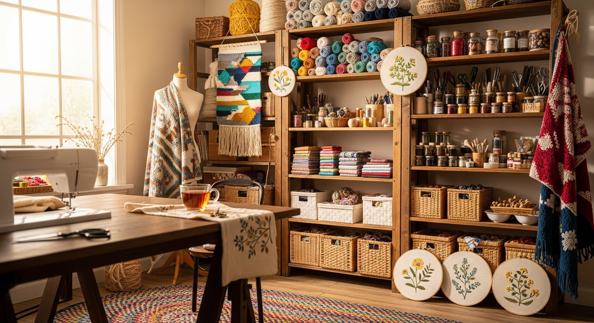
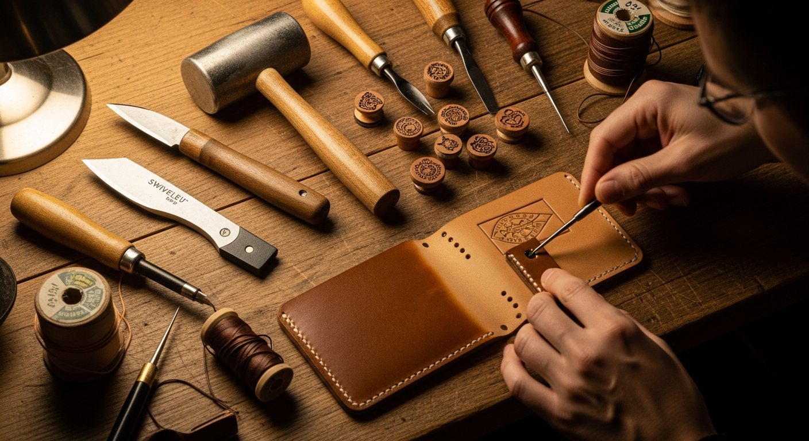
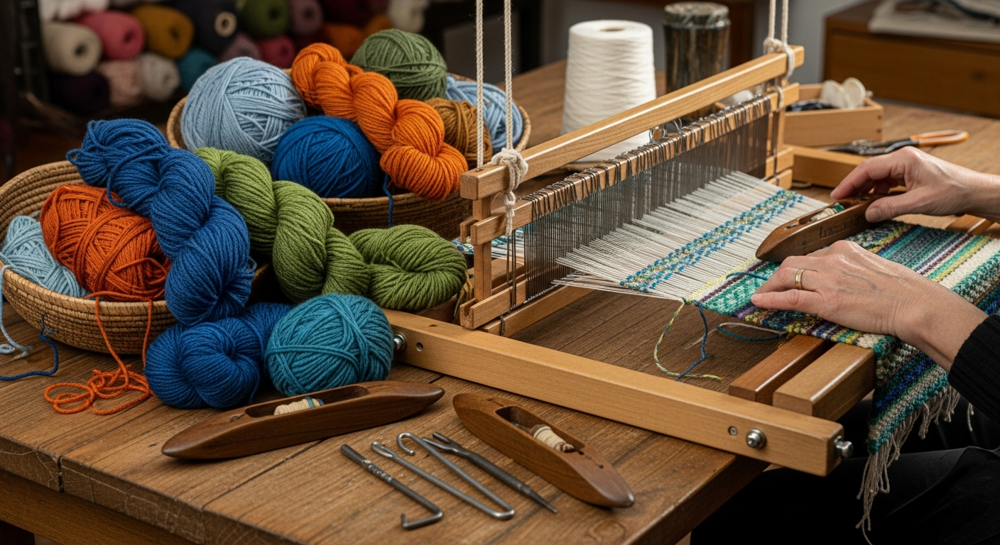
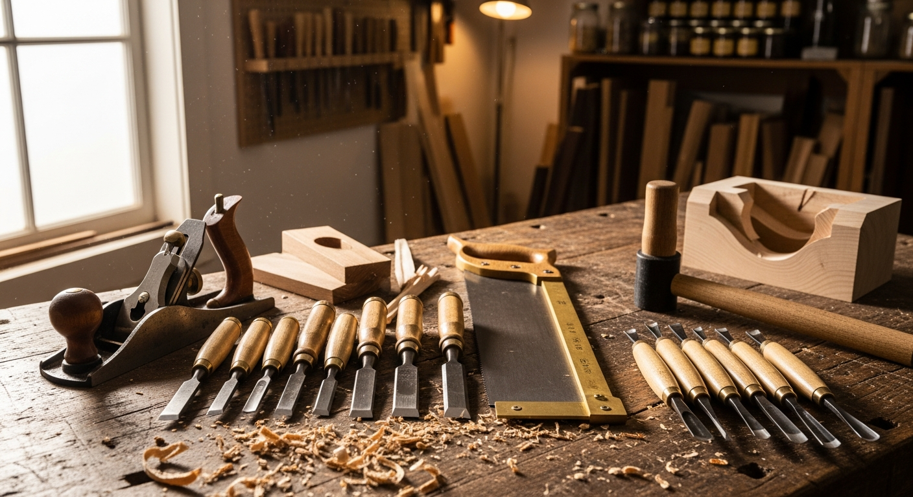
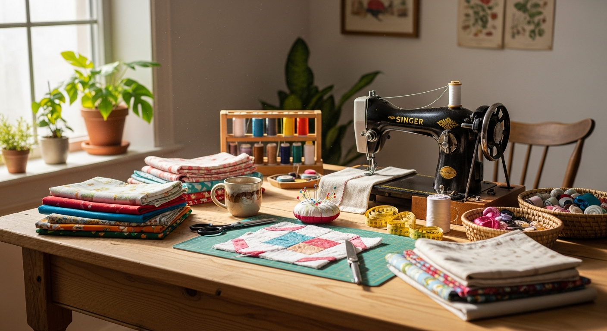

品牌特色與服務Our Services

專屬客製化服務Custom Order
我們提供獨一無二的客製化手作服務。無論是想要在布包上繡上專屬的英文字母、挑選特定的植物染色彩，或是量身打造獨特的金工飾品，我們都能為您實現。
從設計討論、材質挑選到手工製作，每一個步驟都充滿溫度與用心。
讓手作物件不僅是實用的生活用品，更是承載心意與故事的珍貴禮物。

企業品牌合作Corporate Gifts
我們提供企業專屬的禮贈品設計與製作服務。將您的品牌精神結合溫潤的手作工藝，打造出有別於市面量產商品的質感禮物。
適合做為員工福利、VIP客戶贈禮、或是品牌活動專屬紀念品。
我們也可提供到府或到企業內部舉辦手作體驗包班課程，讓參與者親身感受創作的樂趣。


實體工作坊體驗Workshop Experience
位在台北大稻埕的實體工作室，擁有充足的自然採光與舒適的創作空間。我們定期舉辦各類型的手作體驗課程，從基礎刺繡、金工到植物染，帶領您放慢生活步調。
課程皆由擁有豐富經驗的專業講師親自指導，即使是完全沒有基礎的新手也能輕鬆上手。
歡迎您在週末的午後，來這裡享受專注於手作的寧靜時光。

友善環境與永續Sustainability
拾光手作工作室堅持在創作過程中，盡可能減少對環境的負擔。我們優先選用未經化學處理的天然棉麻布料、植物萃取染劑，以及可回收循環的金屬媒材。
在產品包裝上，我們也全面採用牛皮紙材與純棉麻繩，拒絕使用過度包裝與一次性塑膠。
我們相信，美好的設計應該與自然環境和諧共存。
